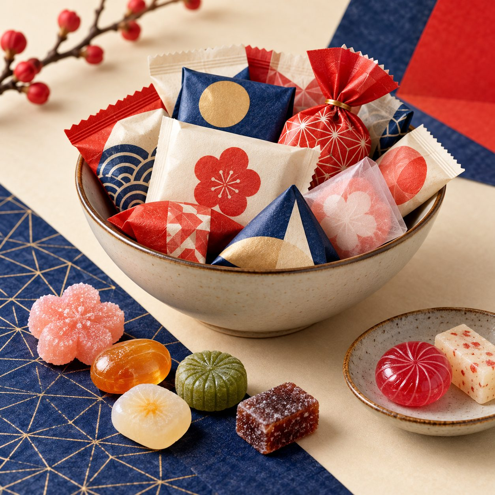
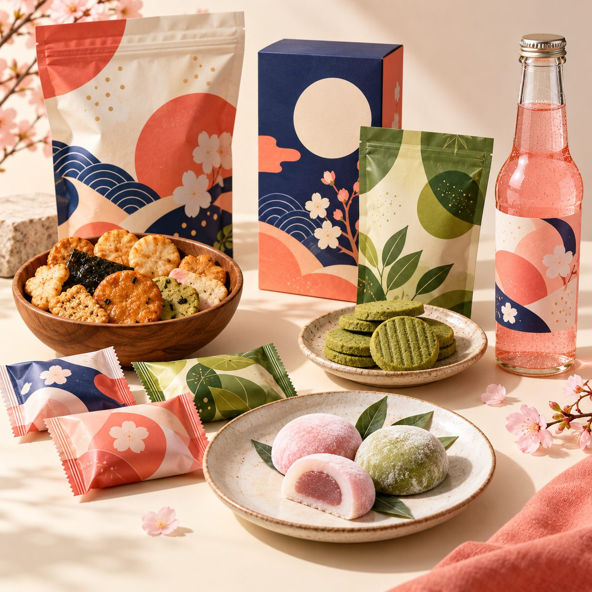

Visuel d’ambiance
Exemple fictif · prix test
Bonbons fruités · sélection découverte
Une piste pour comparer textures et parfums.
Collection fictive / Snacks sucrés
Des confiseries aux assortiments : commencez par les textures et les envies, pas par une promesse de marque.
Voir les exemples ↓
Snacks sucrés · exemples de fiches
Prix TTC fictifs · stock test au moment de la maquette · livraison simulée en France métropolitaine : 3 à 5 jours ouvrés. Aucune commande possible.
Exemple fictif · prix test
Une piste pour comparer textures et parfums.

Visuel d’ambianceExemple fictif · prix test
Plusieurs bouchées à découvrir dans un même panier fictif.